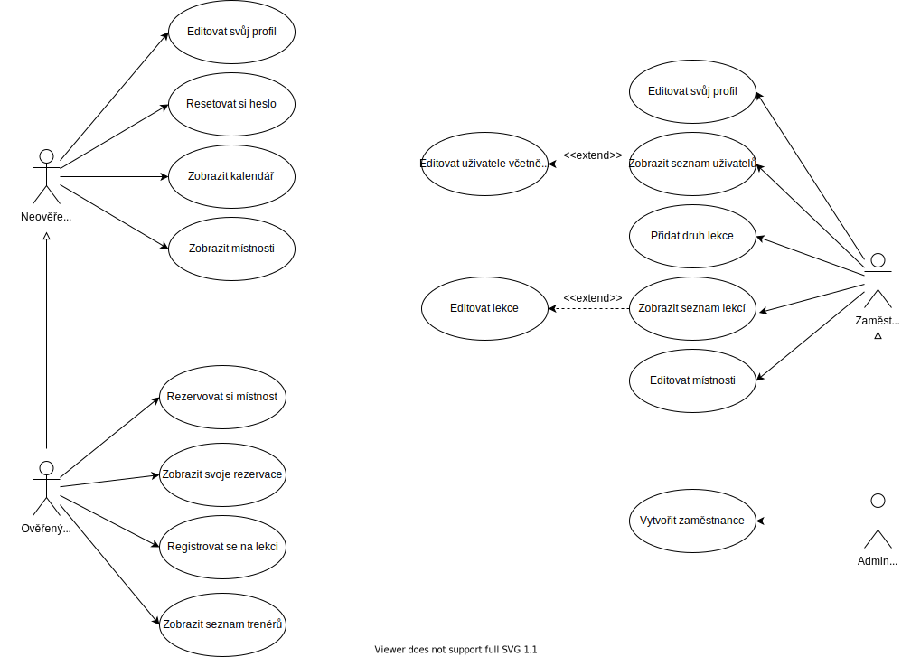

| Login | Heslo | Role |
|---|---|---|
| admin@fitness.mpech.net | test | Administrátor |
| martin@fitness.mpech.net | test | Zaměstnanec |
| verifieduser@mpech.net | test | Zákazník/uživatel (ověřený) |
| unverifieduser@mpech.net | test | Zákazník/uživatel (neověřený) |
| testuser@mpech.net | test | Zákazník/uživatel (ověřený) |

Základem našeho informačního systému je aplikace, která zodpovídá za registrování a přihlašování uživatelů ke svým uživatelským účtům. Aby však tato aplikace fungovala, je potřeba nejprve inicializovat připojení k databázi. K tomu dochází v souboru db.php. Registrace (přihlášení) je realizována v souboru login.php.
Dále je volán příslušný skript pro registraci (reigister.php), nebo pro přihlášení (loginUser.php). Po přihlášení dojde k inicializaci sezení a přesměrování na hlavní stránku (index.php). Uživatel má možnost z hlavní stránky klinutím na svůj avatar přejít na svůj profil (profile.php), nebo procházet webové stránky fitness centra.
V případě, že se dostane na svůj profil, může z něj realizovat různé operace, jako například správu profilu nebo zobrazení svých rezervací. V opačném případě může provádět interakci s kalendářem lekcí, nebo kalendářem místností. To platí jen v případě, že si předem uživatel ověřil svůj účet. To může provést kliknutím na odkaz v e-mailu, který mu byl zaslán při registraci.
Možnosti uživatele jsou rozšířené u profilu zaměstnance, který na rozdíl od uživatele může spravovat jednotlivé uživatele, jejich rezervace a účty (skripty editLecturesAdmin.php, editUserLecturesAdmin.php, editUserProfileAdmin.php) a místnosti (skripty adminAddRoom.php, adminEditRoom.php a adminRoomDashboard.php).
Další významnou částí aplikace je onen rezervační kalendář. Ten je generovaný pro různé sekce IS jinak a je generovaný ze skriptu calendar.php.
Průběh dosavadní realizace byl konzultován s potenciálním klientem. Nejprve jsme společně probrali představu a následně jsme pravidelně konzultovali funkcionalitu systému. Původním požadavkem bylo zjednodušit práci obsluhy multifunkční sportovní haly, která doposud pro všechny aktivity využívá jeden kompletní IS, který ale není vytvořený na míru. Vhodný je například pro rezervace velké haly, ale nevyhovuje požadavkům pro fitness centrum, které je součástí areálu. Naším cílem tedy bylo vytvořit řešení pro tuto aktivitu.
IS není ve finální podobě a je stále ve vývoji. V rámci projektu do IIS jsme se snažili vytvořit stěžejní funkcionalitu doprovázenou ucházejícím designem. Do budoucna se do ISu budou integrovat další (méně důležité) funkce. V nejbližší době bude pro klienty s aktivovaným účtem umožněno odesílat e-maily přímo přes IS (obdobná funkce je již implementována v podobě automaticky generovaných e-mailů s ověřovacími klíči a design bude převzat z existujících webových stránek jednoho z autorů), role zaměstnanců v databázi budou hrát větší roli než nyní (např. recepční nebude moci vytvářet lekce), vznikne admin stránka pro správce, který bude moci provádět hromadné operace nad uživateli a přibude mnoho uživatelsky přívětivějších způsobů práce s IS. Dále zvažujeme možnost přidání uživatelova „finančního konta“, pro snazší správu uživatelů. V budoucnu bude možné všechny operace potvrzovat a nebude možné přihlášení na již uplynulé lekce.
accounts.sql (MariaDB).WWW.db.php a mailHandler.php.